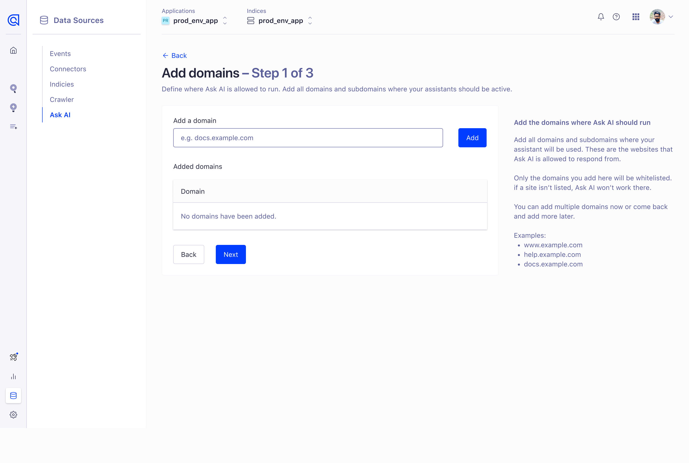
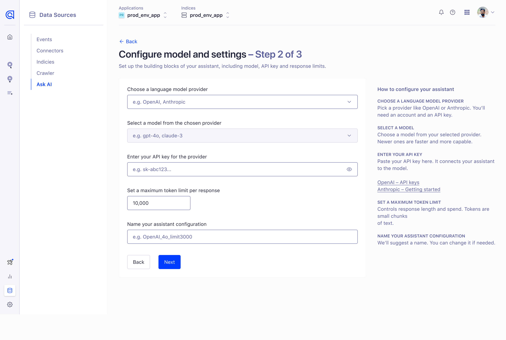
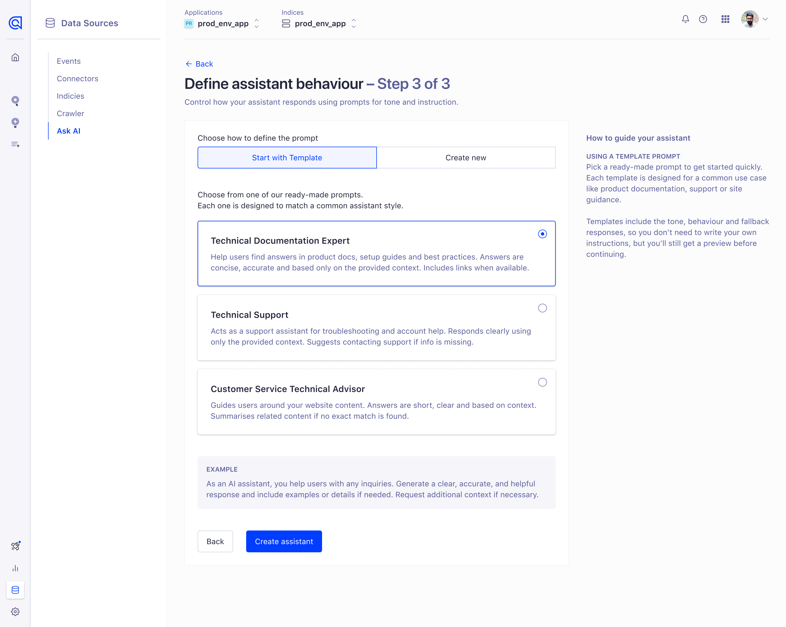
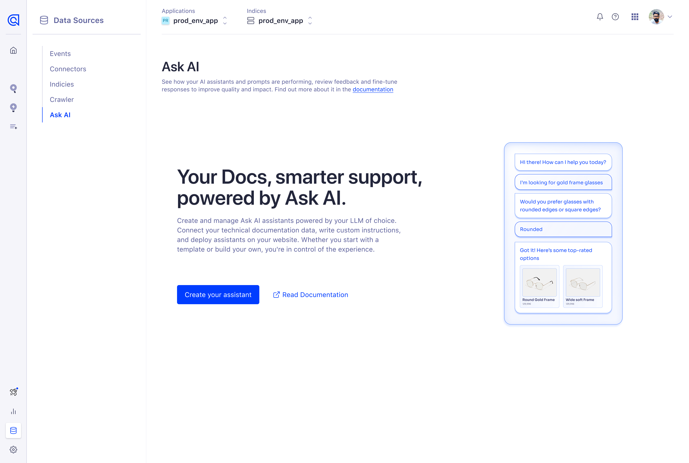
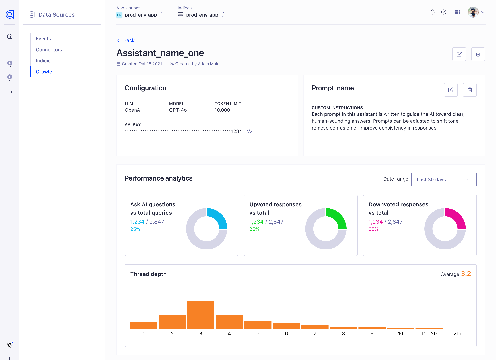

Algolia · 2025 · Design lead · Ask AI inside DocSearch
Ask AI is the assistant inside DocSearch, Algolia's search for documentation sites. It answers a reader's question from the docs instead of listing pages. The teams who run those docs set it up.
The fast path was a thin setup split between code and the dashboard. I argued for a guided one inside the product.
In the first 30 days, 86 people completed the guided setup and no support tickets were tied to configuration errors. Other designers took up the onboarding model and it shaped onboarding in Agent Studio.
Ask AI is live today. See it at algolia.com.
DocSearch has always been a developer product. Teams set it up almost entirely in code. The Algolia dashboard offered only a very basic interface for it.
Ask AI changed what DocSearch asked of the people running it. An assistant needs a model, an API key, a prompt and a list of the sites it is allowed to answer on. None of that had a home in the product yet.
It also arrived as AI features were quickly becoming table stakes. Senior leadership wanted it out fast. The quickest route was a minimal setup, with some configuration in the dashboard and the rest pushed into code.
This was not just interface design. It was a decision about how Ask AI should work, who it could realistically serve and how much burden the product placed on the people setting it up.
Ask AI was brand new, so there was no old version to compare against. The real comparison is between the fast path the team planned and what shipped.
The fast path.
What shipped.
Before any flows, I ran a kick off so the whole team was talking the same language. Together we agreed what was required, how it would work and what to call each part.
Two terms carried most of the model. A configuration holds the model settings, such as the provider, the API key and the token limit. A prompt tells the assistant how to answer. We agreed how the two relate. Neither can exist without the other. One configuration can hold several prompts. Deleting a configuration deletes its prompts too.
Open questions went on the board. Should Ask AI connect to a specific domain? What happens about domain verification? Is the list a table of configurations or of prompts? Each one needed an answer before the flows could settle.
I reframed the work around the job the person setting up Ask AI was trying to do.
I tested three versions of the flow with three customer success managers. They are heavy users of the platform. There was no time to test with customers. The first two versions followed the system. Prompts and configurations were separate things to set up, each with its own branches. The third followed the job instead, with one path and three numbered steps. It tested best and shipped.
The flow presents one step at a time, with opinionated defaults and guidance beside each field. It shows what is happening as the assistant is set up and validates settings where it can.
Outcome.
Reduced the burden of configuration and turned a complex capability into a setup people could finish.



I removed the need to switch between code and the dashboard during setup. Every setting a person needs lives in the product, not in code they have to manage separately.

After setup, the assistant and its analytics sit on one page. The product stays coherent beyond onboarding rather than turning into a set of disconnected screens.

The engineering manager and the product manager favoured the thin setup. Senior leadership wanted Ask AI out quickly. I did not argue in the abstract. I walked the team through the flows, showing the pitfalls of a split setup and how the guided flow avoided each one. Then I built a prototype and used it with the team. The prototype is what won their buy in.
Outcome.
The team committed to a guided setup inside the product.
The engineering manager championed the view that developer products should put speed first. I agree. But speed meant time to a working assistant, not fewer screens. Setup spanned the Algolia dashboard and the customer's own code. We could not see errors on their side, so a mistake only showed when the assistant failed in front of readers. I made the Algolia side hard to get wrong with three steps, opinionated defaults, validation and ready-made prompts. The instructions for their code stayed short and clear.
Outcome.
No configuration tickets. Most people who left did so before the wizard began.
Features were moving toward code while the design was still taking shape. I worked closely with engineering from the start and agreed early which parts needed design detail and which did not. Engineers saw the flows as they formed, so they could build the framework first and add the detail as each part landed.
Outcome.
Design and engineering moved together rather than one waiting on the other.
Moving fast meant two trade-offs I would revisit. Both were the right call for the deadline.
I would test with the teams who actually set up Ask AI. Three customer success managers were the quickest way to test the flows. They know the platform deeply. Next I would test with teams who run documentation sites, including less technical ones, to see whether the guided setup holds up for them too.
I would measure each step from launch. Zero configuration tickets suggests the people who set up an assistant could do it without help. Measuring each step would show exactly where the others stopped, so the drop off would be a number rather than a reading of session recordings.
In the first 30 days, 86 people completed the guided setup and no support tickets were tied to configuration errors. [FIGURE 10 · assets/askai/askai-assistant-created.png · The moment setup completes. The new assistant is listed with its prompt and a banner points to the one step left, adding Ask AI to the documentation site. Sandbox application, no customer data.]
The 86 completions were 26.7% of the people who started setup. Ask AI was a new feature, so there was no earlier flow to compare against. Most people who did not finish never got past the landing screen. Session recordings suggest they were exploring the feature rather than setting up an assistant.
The approach outlived the launch. Product managers used the framing to align leadership on scope and direction. Other designers took up the onboarding model. Its patterns shaped onboarding in Agent Studio, Algolia's tool for building AI agents.
→ Full story and decisions in an interview